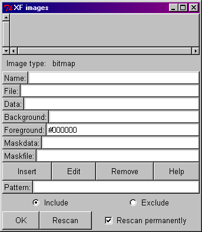

Next: XFProcMiscSaveEdge Up: Misc Previous: XFProcMiscModules
Next: XFProcMiscSaveEdge
Up: Misc Previous:
XFProcMiscModules
This procedure activates a dialog box in which the user can select bitmaps or images to be preloaded. The necessary "image create" commands are generated in the output source code to automatically load the images.

Figure: The procedure XFProcMiscImages
The top list box contains all bitmaps/pixmaps that are currently loaded into Tk . Clicking on a name displays the image's information in the entry boxes. A new image may be added by entering its file name, giving it a name then pressing the Insert button. To remove a selected name from the top list box, click on the name then press the Remove button.